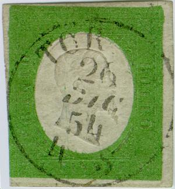
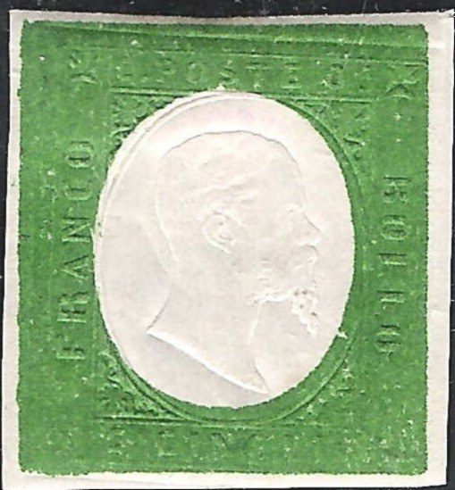
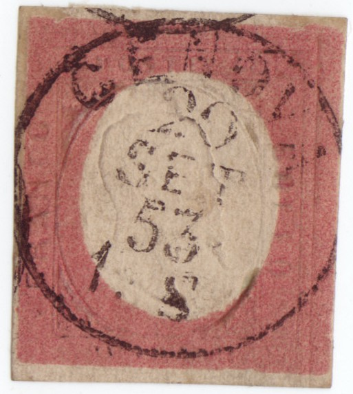
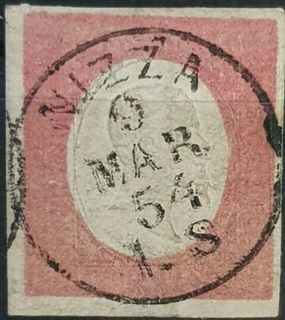
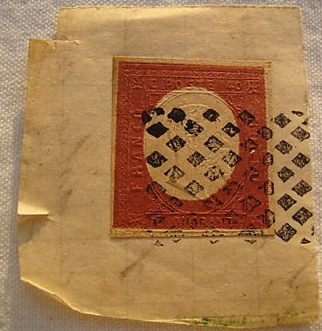

{kind=link}



Sardegna - Sardinien - Sardaigne
Return To Catalogue - Sardinia 1851 and 1853 issue - Sardinia forgeries of the 1851 issue - Sardinia 1855 issue - Italy
Note: on my website many of the
pictures can not be seen! They are of course present in the
catalogue;
contact me if you want to purchase the catalogue
With thanks to Lorenzo, (check his excellent website on Italian States!) http://www.antichistati.com/800/index800.html who kindly set some of his images at my disposal.
5 c green 20 c blue 40 c red
Value of the stamps |
|||
vc = very common c = common * = not so common ** = uncommon |
*** = very uncommon R = rare RR = very rare RRR = extremely rare |
||
| Value | Unused | Used | Remarks |
| 5 c | RR | RRR | |
| 20 c | RR | RR | |
| 40 c | RR | RRR | |
A large amount of remainders exist (printed on greyish instead of white paper), the sizes of these remainders are also slightly different. "Misprints" of 5 c blue, 40 c blue, 20 c green, 40 c green, 5 c red and 20 c red are forgeries.


A 40 c 'misprint' forgery. Also a 20 c in the color of the 40 c.
A very clear copy:


Single circle cancel from Torino, the hour markings in the bottom
went to half an hour for this city, i.e. "1 1/2 S",
Genova also had half-hour markings. All other cities just had
'whole' hour markings.
Unofficial reprints were made of these stamps; the Serrane guide lists a first set by the printer himself, a second set in Florence (by Usigli) and a third set in Berlin (Cohn?). They are quite deceptive. Also forgeries were made in Genoa (by the forger Imperato I presume). All these remainders, reprints and forgeries exist with deceptive forged cancels (with interchangeable dates!).


I've been told that these stamps are reprints

The above reprint was made by Usigli, I've been told
I have seen many forgeries (reprints?) in fancy colours (even gold and silver):


A stamp with a cancel from 1853?

These stamps have cancel "GENOVA 20 SET 53 1.S", one
year before the stamp was issued! I've seen another stamp with
exactly the same cancel. This is probably a forged cancel. There
shouldn't be a dot between the "1" and "S".


"SAVONA 3 OTT 54 9.M" forged cancel as also shown in
the Fournier sheet shown after the previous issue. There
shouldn't be a dot between the "9" and "M".


Another forged cancel "BIELLA 18 APR. 54 6.M". There
shouldn't be a dot between the "6" and "M".
The Serrane guides states forged cancels on Genoa Imperato forgeries (and remainders) from Allessandria, Biella, Casale, Chiavari, Genova, Monte Rotondo, Nizza, Novara, Pallanza, Pinerolo, Saluzzo, Savona, Susa, Torino, Tortona and Vercelli; as well as forged "PD" cancels in red, blue or black. Additional information on forged postmarks can be found at: http://www.ilpostalista.it/falsi008.htm, http://www.ilpostalista.it/falsi008a.htm. Also http://www.ilpostalista.it/falsi/falsi016.htm. More on forgeries: https://www.lafilatelia.it/riconoscere-i-falsi/180-asi-sardegna. On http://www.ilpostalista.it/falsi/falsi020.htm it is stated that for single circle town cancels there should never be a dot in between the number and the "M" or "S" at the bottom, except for a much later cancel of Cagliari (of 1861 ?) and Milano(?). These forgeries were apparently also offered by Fournier, since they can be found in the Fournier Album.
Other forged cancels, all with the 'dot' between the value and letter at the bottom (as stated in the Serrane guide, the dates could be changed):


Forged cancels: "ALESSANDRIA 20 Giu 5? 1.M",
"CAGLIARI 22 DIC 54 7.S", "CAGLIARI 22 LUG 54
4.M", "GENOVA 24 LUG 54 7.M", "GENOVA 5 OTT
54 4.M", "NIZZA 10 NOV 5? 10.M", "PINEROLO ?
SET ?? 4.S", "SAVONA 13 SET 54 4.M", "TORINO
6 DIC 54 7.M", "TORINO 15 LUG 54 4.S",
"TORTONA ?? 4.S" and "PINEROLO 4? SET 4.S"..



"NIZZA 9 MAR 54 1.S"


"NOVARA 25 ??? 53 4.M", "NOVARA 16 LUG 54
10.M"

Forged cancel "SAVONA 26 ? 54 4.S"


According to http://www.ilpostalista.it/falsi/falsi020.htm the
town of Susa never used a single circle cancel.... The same
"SUSA 14 LUG 54 4.S" cancel can be found in some of the
forgeries in the Fournier album (I've seen it on a 5 c green of
the previous issue).

"TORINO 4 GIU 54 10.M"

"CHIAVARI 25 FEB 54 10.S" according to
http://www.ilpostalista.it/falsi/falsi020.htm the town of
Chiavari only received this cancel in 1862 (and can thus not have
been cancelled in 1854....).
A page from a Fournier Album with forgeries of Sardinia.

{kind=link}
{kind=link}
{kind=link}